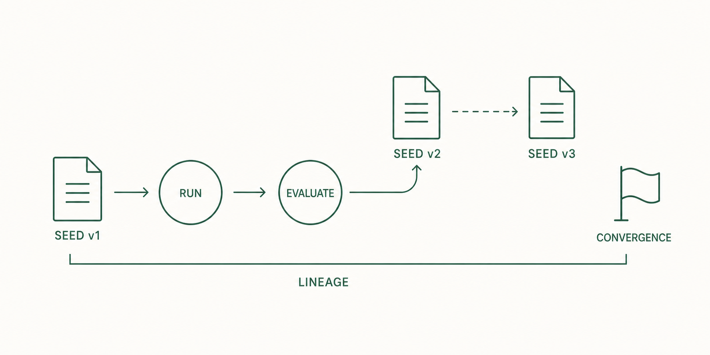

9. 반복 수정
8장 평가에서 통과하지 못한 기준이 남았다고 가정합니다. Evolve는 그 평가 결과를 Seed에 반영해 다시 실행하는 기능입니다.
9.1 무엇을 하는가
평가가 끝나도 작업이 항상 끝나는 것은 아닙니다. Evolve는 평가에서 확인한 문제를 근거로 Seed의 목표, 제약, 완료 기준 변경안을 만들고, 바뀐 Seed로 실행을 반복합니다. 예제에서는 "완료한 일이 새로고침 뒤 초기화된다"는 실패를 다음 Seed에 반영합니다.
9.2 실행
Claude Code 대화창에서 작업 설명과 함께 실행합니다.
ooo evolve "할 일 앱: 완료 상태가 새로고침 뒤에도 유지되게"정상 결과: 평가 결과를 반영한 Seed 변경안과 실행 결과, 그리고 lineage_id가 표시됩니다. 한 세대는 아직 모르는 것을 찾는 Wonder, 변경안을 만드는 Reflect, 실행, 평가 순서로 진행됩니다.
코드를 다시 만들지 않고 Seed 변경안만 보려면 --no-execute를 붙입니다. 이어진 실행 목록은 ooo evolve --status <lineage_id>로 확인합니다.
9.3 lineage — 수정 이력

한 번의 evolve가 만든 새 Seed와 실행을 세대라고 부르고, 같은 시작 Seed에서 이어진 세대들의 묶음을 lineage라고 부릅니다. lineage 상태는 출력된 lineage_id로 조회합니다.
9.4 자동 종료 조건
공식 문서 기준으로 반복은 아래 조건 중 하나에서 멈춥니다.
| 조건 | 기준 |
|---|---|
| Convergence | 연속된 두 세대의 Ontology 유사도가 0.95 이상이면 데이터 구조가 안정된 것으로 보고 멈춥니다. |
| Stagnation | 유사도가 기준 이상인 상태가 3세대 연속 이어지면 더 바뀔 것이 없다고 보고 멈춥니다. |
| Oscillation | 두 세대 전과 같은 구조로 되돌아오는 반복이 감지되면 멈춥니다. |
| 세대 상한 | 최대 30세대에 도달하면 멈춥니다. |
Convergence 검사는 최소 2세대가 지난 뒤부터 적용됩니다.
9.5 Ralph — 자동 반복
세대마다 직접 evolve를 부르는 대신, 종료 조건까지 반복을 맡기려면 Ralph를 사용합니다. 9.2에서 받은 lineage_id를 넣어 실행합니다.
ooo ralph --lineage-id <lineage_id>정상 결과: 배경 작업이 시작되고 작업 ID가 표시됩니다. QA 통과, Convergence, 취소, 복구 불가능한 실패, 세대 상한, 같은 결과가 오가는 반복 감지, 등급 후퇴, 시간 제한 초과 중 하나에 도달할 때까지 세대를 반복합니다.
9.6 사람이 멈출 때
자동 반복 횟수가 품질을 보장하지 않습니다. 아래 경우에는 반복을 멈추고 사람이 방향을 다시 정합니다.
- 완료 기준이 이미 충족됐다.
- 같은 질문이나 실패가 반복된다.
- 바뀌는 내용이 실행 비용에 비해 작다.
- 제품 방향 자체를 다시 정해야 한다.
진행 중인 실행을 멈추는 방법은 7장의 실행 취소와 같습니다.